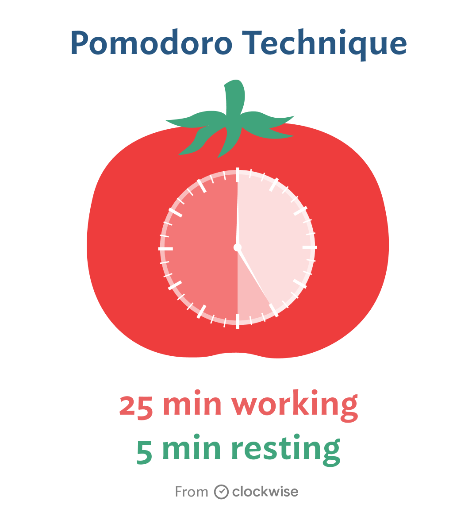

01
The Pomodoro Technique for Digital Focus
The Pomodoro Technique is a time management tool to help people focus, avoid distractions, and fight off digital fatigue. It was developed by Francesco Cirillo in the late 1980s, and its premise involves working for short sprints, followed by rest, to recharge your mental and productive faculties.

How It Works:
- Set the timer for a straight-out 25 minutes and give that time to the given task.
- At the beep, take a short break of 5 minutes.
- Repeat these intervals four times, then take a bit longer break of 15-30 minutes.
- This trains your brain to work in spurts, making deep work much easier.
It works very well for students, remote workers, and anyone else up against digital distractions. The scheduled breaks counter screen fatigue while frequent mental refreshes can induce motivation.
Recommended Pomodoro Apps:
- Pomofocus – a clean, customizable Pomodoro timer for desktop and mobile.
- TomatoTimer – simple, useful, and has keyboard shortcuts.
- Focus Keeper (iOS) – mobile application for productivity stats.
- Forest App (Android/iOS) – Focus timer in the form of a game where trees grow if you stay focused.